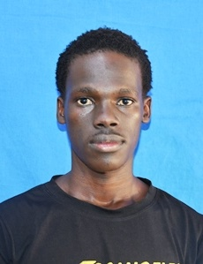

JEFF OCHIENG
Health Promotion and Sports Science Student
Kakamega, Kenya |
0759389542 |
ajewejeff@gmail.com
Professional Profile
Motivated Health Promotion and Sports Science student at
Masinde Muliro University of Science and Technology, with
a strong interest in community health, health education,
healthy eating, and physical activity. Passionate about
promoting healthier lifestyles, raising awareness of
health risks, and supporting initiatives that improve
individual and community well-being.
Career Objective
To develop a career in health promotion and sports science
by contributing to health education, community outreach,
disease prevention awareness, and physical activity
initiatives that promote healthier communities.
Education
Masinde Muliro University of Science and Technology
Bachelor's Degree in Health Promotion and Sports Science
2025–Present | Four-year programme
Key Skills
-
Communication:
Ability to share information clearly and effectively.
-
Teamwork and Collaboration:
Willingness to work with others to address community
health needs.
-
Problem-Solving:
Ability to contribute to identifying challenges and
developing practical solutions.
-
Computer Literacy:
Basic computer skills and application knowledge.
-
Health Awareness:
Interest in health education, healthy living, and
disease prevention.
-
Community Engagement:
Interest in supporting community health awareness
and wellness activities.
Project
Digital Innovation in Health Promotion and Sports Science
Exploring how digital technologies and collaboration can
support innovative solutions, improve health communication,
and strengthen health promotion and sports science
initiatives.
Career Interests
-
Health Promotion:
Health education, disease prevention awareness, and
healthier lifestyles.
-
Sports Science:
Encouraging physical activity and active living.
-
Digital Health Innovation:
Exploring technology for health communication and
community wellness.
-
Community Health:
Supporting initiatives that improve community
well-being and quality of life.